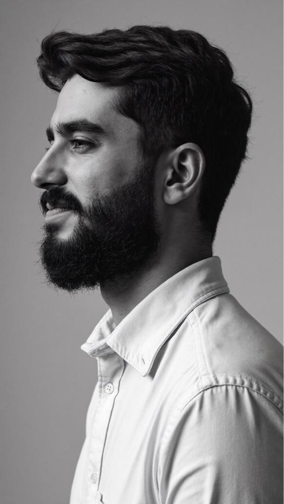

Cuidado médico dedicado ao transtorno de personalidade borderline, em adolescentes e adultos, com a família como parte do tratamento.

Médico, pós-graduado em psiquiatria, com foco no transtorno de personalidade borderline. Dez anos de atuação em CAPS e consultório próprio em Mogi das Cruzes, SP. Atendimento individual e de casal. CRM-SP 183549.
Autor de Quem Sofre Não Escolhe Como Gritar e criador do Protocolo 7 Dias. Produz conteúdo educativo diário em @drfabioschmidt.
Meu trabalho parte dessa convicção, com um cuidado realista e humano.
Adoto o GPM-A (Good Psychiatric Management for Adolescents), modelo desenvolvido no McLean Hospital, vinculado a Harvard. Na prática:
Avaliação inicial completa e anamnese detalhada.
Acompanhamento contínuo da evolução clínica.
4 consultas, a R$ 550 cada. Parcelamento em até 3x no cartão.
4 consultas com prioridade na agenda, suporte combinado via WhatsApp e materiais de apoio e orientações exclusivas.
O agendamento é confirmado após a confirmação do pagamento via Asaas.
Primeira consulta, retorno ou um dos pacotes, conforme a página de valores.
Pelo site www.drfabioschmidt.net ou por mensagem direta no Instagram @drfabioschmidt, para combinar dia e horário.
O horário é confirmado após o pagamento via Asaas.
Um questionário de cerca de 2 minutos que ajuda a tornar a consulta mais assertiva. Anote também queixas, medicamentos em uso e dúvidas.
Preencher a pré-consultaAgendar pelo siteMensagem no Instagram
Dúvidas sobre agenda e horários: mensagem direta em @drfabioschmidt ou www.drfabioschmidt.net.
Informações de caráter educativo e de divulgação do serviço médico. Não substituem avaliação individual e não oferecem diagnóstico, prescrição ou promessa de resultado. Dr. Fabio Schmidt · Médico · CRM-SP 183549 · www.drfabioschmidt.net · @drfabioschmidt